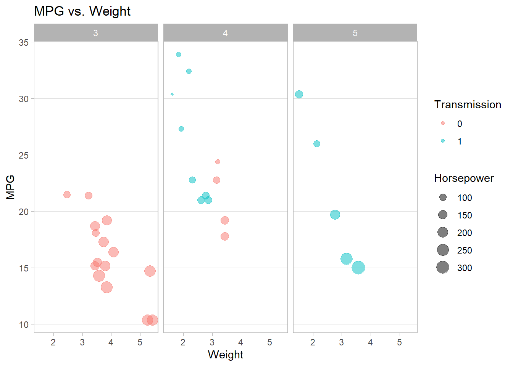

13 Recommended R Libraries
The following is a list of recommended R libraries to install–they can be helpful for data management, graphing, and formatting.
13.1 tidyverse
The tidyverse package is a metapackage consisting of other libraries. The most useful ones for a beginner, I believe, are ggplot2, dplyr, tidyr, and purrr.
For more information, see the tidyverse website.
13.1.1 ggplot2
The library ggplot2 offers visualization tools with a modern aesthetic. The following is an example of a small-multiples3 scatter plot. For more information, see the ggplot2 website.
ggplot(mtcars) +
aes(y = mpg, x = wt, col = factor(am), size = hp) +
geom_point(alpha = 0.5) +
labs(y = 'MPG',
x = 'Weight',
col = 'Transmission',
size = 'Horsepower',
title = 'MPG vs. Weight') +
facet_wrap(~ gear) +
theme_light() +
theme(panel.grid.minor = element_blank(),
panel.grid.major.x = element_blank())
13.1.2 dplyr
The dplyr library provides aggregation tools for data management. The following is an example of calculating the mean and median MPG by gear.
For more information, see the dplyr website.
my_agg <- mtcars %>%
select(mpg, gear) %>%
group_by(gear) %>%
summarise(mean_mpg = mean(mpg),
median_mpg = median(mpg))
my_agg## # A tibble: 3 x 3
## gear mean_mpg median_mpg
## <dbl> <dbl> <dbl>
## 1 3 16.1 15.5
## 2 4 24.5 22.8
## 3 5 21.4 19.713.1.3 tidyr
The tidyr library provides pivoting tools to reshape your dataset. The following are examples of how to reformat an aggregation from dplyr’s functions.
For more information, see the tidyr website.
# Aggregation
my_agg <- mtcars %>%
select(mpg, gear, am) %>%
group_by(gear, am) %>%
summarise(mean_mpg = mean(mpg))
# Pivot wide
my_agg2 <- my_agg %>%
pivot_wider(id_cols = gear, # rows
names_from = am, # columns
values_from = mean_mpg) # values
my_agg2## # A tibble: 3 x 3
## # Groups: gear [3]
## gear `0` `1`
## <dbl> <dbl> <dbl>
## 1 3 16.1 NA
## 2 4 21.0 26.3
## 3 5 NA 21.4# Pivot long
my_agg2 %>%
pivot_longer(2:3,
names_to = 'am',
values_to = 'mpg',
values_drop_na = TRUE) # drop NA values## # A tibble: 4 x 3
## # Groups: gear [3]
## gear am mpg
## <dbl> <chr> <dbl>
## 1 3 0 16.1
## 2 4 0 21.0
## 3 4 1 26.3
## 4 5 1 21.413.1.4 purrr
The purrr library offers functionals similar to the *apply() functions (the former’s map() operates similarly as the latter’s lapply()); however, the former contains functions that maintain type consistency. For example, there is a function called map_dbl() that throws an error if the output is not a double vector (i.e., a numeric vector), which is useful when you want to catch your program’s errors.
The following are some examples from purrr. For more information on how to use these and other functions within the library, see the purrr website.
## $mpg
## [1] 20.09062
##
## $cyl
## [1] 6.1875
##
## $disp
## [1] 230.7219
##
## $hp
## [1] 146.6875
##
## $drat
## [1] 3.596563
##
## $wt
## [1] 3.21725
##
## $qsec
## [1] 17.84875
##
## $vs
## [1] 0.4375
##
## $am
## [1] 0.40625
##
## $gear
## [1] 3.6875
##
## $carb
## [1] 2.8125## mpg cyl disp hp drat wt qsec
## 20.090625 6.187500 230.721875 146.687500 3.596563 3.217250 17.848750
## vs am gear carb
## 0.437500 0.406250 3.687500 2.812500## # A tibble: 1 x 11
## mpg cyl disp hp drat wt qsec vs am gear carb
## <dbl> <dbl> <dbl> <dbl> <dbl> <dbl> <dbl> <dbl> <dbl> <dbl> <dbl>
## 1 20.1 6.19 231. 147. 3.60 3.22 17.8 0.438 0.406 3.69 2.8113.2 knitr
The knitr library is an “engine for dynamic report generation,” which allows for better formatted tables and documentation capabilities when using R Markdown.4 The following example demonstrates kable() to format a table.
| 0 | 1 | |
|---|---|---|
| 3 | 15 | 0 |
| 4 | 4 | 8 |
| 5 | 0 | 5 |
13.3 stargazer
The stargazer library allows one to format a regression model to be closer to journal-quality guidelines.
For more information, see its documentation on CRAN.
##
## Please cite as:## Hlavac, Marek (2018). stargazer: Well-Formatted Regression and Summary Statistics Tables.## R package version 5.2.2. https://CRAN.R-project.org/package=stargazerIf you are using RGui or R Studio and not R Markdown, I recommend to set type = 'text' so that only textual output will be produced instead of LaTeX or HTML code.
##
## ===============================================
## Dependent variable:
## ---------------------------
## mpg
## -----------------------------------------------
## wt -3.113**
## (1.179)
##
## hp -0.043***
## (0.014)
##
## disp 0.005
## (0.012)
##
## gear 0.652
## (1.212)
##
## am 1.605
## (1.782)
##
## Constant 32.108***
## (4.844)
##
## -----------------------------------------------
## Observations 32
## R2 0.842
## Adjusted R2 0.812
## Residual Std. Error 2.616 (df = 26)
## F Statistic 27.709*** (df = 5; 26)
## ===============================================
## Note: *p<0.1; **p<0.05; ***p<0.01If you happen to use R Markdown, then set type = 'html' for HTML documents and omit type for PDF documents.
For more on R Markdown, see the R Markdown book by Yihui Xie, J. J. Allaire, and Garrett Grolemund.
| Dependent variable: | |
| mpg | |
| wt | -3.113** |
| (1.179) | |
| hp | -0.043*** |
| (0.014) | |
| disp | 0.005 |
| (0.012) | |
| gear | 0.652 |
| (1.212) | |
| am | 1.605 |
| (1.782) | |
| Constant | 32.108*** |
| (4.844) | |
| Observations | 32 |
| R2 | 0.842 |
| Adjusted R2 | 0.812 |
| Residual Std. Error | 2.616 (df = 26) |
| F Statistic | 27.709*** (df = 5; 26) |
| Note: | p<0.1; p<0.05; p<0.01 |
13.4 Summary
| Library | Function | Description | Example |
|---|---|---|---|
| ggplot2 | ggplot(data) + aes(y, x, …) + geom_point() | Scatter plot with ggplot2. | ggplot(mtcars) + aes(y = mpg, x = wt, col = factor(am), size = hp) + geom_point(alpha = 0.5) |
| dplyr | select(), group_by(), summarise() | Select, group by, and summarise data. | mtcars %>% select(mpg, gear) %>% group_by(gear) %>% summarise(mean_mpg = mean(mpg), median_mpg = median(mpg)) |
| tidyr | pivot_wider(), pivot_longer() | Pivot data long or wide. |
my_agg <- mtcars %>% select(mpg, gear, am) %>% group_by(gear, am) %>% summarise(mean_mpg = mean(mpg)) my_agg2 <- my_agg %>% pivot_wider(id_cols = gear, names_from = am, values_from = mean_mpg) |
| purrr | map(.x, .f) | Apply a function over a data’s elements iteratively. | map(mtcars, mean) |
| knitr | kable(x) | Format a table. |
my_table <- with(mtcars, table(gear, am)) kable(my_table) |
| stargazer | stargazer(x) | Format a regression. |
my_ols <- lm(mpg ~ wt + hp + disp + gear + am, mtcars) stargazer(my_ols, type = ‘text’) |